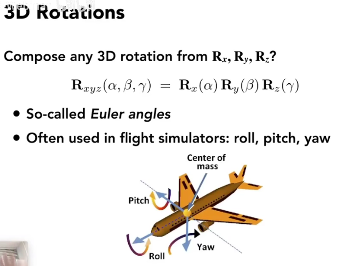

计算机图形学
- 1. Lecture 01 Overview of Computer Graphics
- 2. Lecture 02 Review of Linear Algebra
- 3. Lecture 03 Transformation
- 4. Lecture 04 Transformation Cont.
- 5. Lecture05 Rasterization 1(Triangles)
- 6. Lecture 06 Rasterization 2(Antialiasing and Z-Buffering)
- 7. Lecture 07 Shading(Illumination, Shading, and Graphics Pipeline)
- 8. Shading 2(Shading, Pipeline, Texture Mapping)
- 9. Lecture 09 Shading 3 (Texture Mapping)
- 10. Lecture 10 Geomrtry 1(introduction)
- 11. Lecture 11 Geometry 2(Curves and Surfaces)
- 12. Lecture 12 Geometry 3
- 13. Lecture 13 Ray Tracing 1
- 14. Lecture 14 Ray Tracing 2
- 15. Lecture 15 Ray Tracing
- 16. Lecture 16 Ray Tracing 4
1. Lecture 01 Overview of Computer Graphics
1.1. 课程情况
- 授课老师：闫令琪
- 授课形式：网课（B站）
1.2. 什么是好的画面
画面亮
1.3. 应用场景
电影，游戏，动画，设计，可视化，虚拟现实，增强现实，模拟，GUI图形用户接口。
电影中里程碑：阿凡达，大量应用面部捕捉技术。
1.4. Rasterization 光栅化
实时，FPS>30
离线, FPS<30
1.5. 计算机视觉
计算机图形学离不开计算机视觉，但是视觉一般是对图像的处理。
1.6. 推荐书籍
Tiger虎书
2. Lecture 02 Review of Linear Algebra
2.1. 图形学依赖学科
Optics, Mechanics, Linear algebra, statics, Singal processing, numerical analysis数值分析
2.2. 向量
向量的定义
单位向量
向量计算，向量加法
用笛卡尔坐标系表示向量
向量乘法，点乘和叉乘，点乘在笛卡尔坐标系中就是对应元素相乘。
在图形学中，点乘是为了寻找两个向量的夹角(夹角可以判断两个向量方向的接近程度)，或者获得一个向量在另一个向量的投影，还可以获得向量的分解。
叉乘，叉积结果垂直于这两个向量所在的平面，满足右手定则。向量的叉乘可以写成矩阵形式。
在图形学中的应用：判断左右关系，比如a^b>0，说明b在a的左边。还可以判断内外，比如判断一个点是否在一个三角形内。
坐标系的定义，右手坐标系
2.3. 矩阵
矩阵定义
矩阵乘法
矩阵乘法没有交换律，但是有结合律
矩阵转置，矩阵的逆
向量的点乘和叉乘都可以写成矩阵乘法形式

3. Lecture 03 Transformation
3.1. why transformation 为什么要变换
viewing: 3D to 2D projection
3.2. D变换
- 缩放 scale transform

- 非均匀缩放 scale(non-uniform)
- 翻转 reflection matrix
- 切变 shear matrix
竖直方向上没有变化，水平方向上发生了变化
- 旋转 Rotate
旋转默认绕零点逆时针旋转
二维旋转矩阵R
上述所有的变化都可以写成x$\prime$=Mx，也就是线性变换
3.3. 齐次坐标 homogeneous coordinate
-
为什么要引入齐次坐标，因为对于简单的平移操作并不能写成线性变换的形式，但是人们也不想认为平移是一种特殊的变换，所以引入齐次坐标
-
齐次坐标
注意点和向量的表示方法不同
- 仿射变换 affine transformations
- 2D Transformations
-
逆变换就是乘以逆矩阵
-
复杂的变换都是简单的变换的组合，变换的组合顺序很重要
-
绕着某一个点（非原点）旋转的分解
4. Lecture 04 Transformation Cont.
4.1. D Transformations
- 齐次坐标
对于w不等于1，每一个坐标除以w
- 正交矩阵
一个矩阵的逆等于矩阵的转置，旋转矩阵就是一个正交矩阵
- 仿射变换（旋转+平移）
仿射变换是先进行旋转再进行平移

- 矩阵表示（缩放，平移）

- 旋转
绕着某一个轴旋转
一般的旋转（分解成三个坐标轴的旋转）

Rodrigues’ Rotation Formula, 用向量n表示旋转轴，最终推出这个公式
4.2. view transformation 视图变换
-
观测变换viewing，包括了视图变化和投影变化
-
MVP变换(model->view->projection)
- view transformation(不等于viewing) 视图变换
视图变换是把相机放到标准位置上，located at origin, look at -Z
利用逆变换，先平移再旋转
一般把model和view变换统称为view transformation
4.3. projection transformation 投影变换
- orthographic vs perspectiive projection
- orthographic projection 正交投影
平移，缩放（不考虑旋转）
- perspective projection 透视投影
满足近大远小
透视投影就是先把物体挤压成立方体，然后对立方体进行正交投影
5. Lecture05 Rasterization 1(Triangles)
5.1. Perspective Projection 透视投影
- 首先是对上节课的透视投影的一些补充, 其中l=left, r=right, b=bottom, t=top, n=near, f=far，这些量可以描述视锥Frustum
- 视锥Frustum的描述还可以用fovY(field of view)垂直视角和aspect ratio宽高比
5.2. Canonical Cube to Screen 光栅化
-
把物体的数学描述以及与物体相关的颜色信息转换为屏幕上用于对应位置的像素及用于填充像素的颜色，这个过程称为光栅化。
-
屏幕是最常见的光栅设备，每一个像素都是一个小方块，像素是最小的单位，一个像素的颜色可以用rgb三种颜色表示
- 屏幕空间screen space
- 把之前投影后的小方块变成屏幕空间
5.3. Different Raster Displays 不同的成像设备
-
Oscilloscope 示波器
-
Cathode Ray Tube 阴极射线管成像原理。早期电视屏幕就是这样实现成像，扫描成像。
- Frame Buffer: Memory for a Raster Display 内存中的一块区域存储图像信息。
- LCD(liquid crystal display)液晶显示器，光的波动性原理。
- LED发光二极管

5.4. 三角形光栅化
- 三角形是最基本的多边形，有很多好的性质。
- sampling 采样。三角形离散化。
在不同的像素中心，确定是0还是1,表示在三角形里还是外
- 如何判断点和三角形关系，利用叉积，边界上的点自己定义。
- jaggies锯齿，走样aliasing
6. Lecture 06 Rasterization 2(Antialiasing and Z-Buffering)
6.1. sampling 采样原理
- 视频就是对时间进行采样
- 采样的artifact(瑕疵)：锯齿，摩尔纹，轮胎效应(在时间上采样)
- 反走样采样：可以对原始的图像进行滤波(模糊处理)然后再采样。
- 采样速度跟不上信号变化的速度就会走样(aliasing)
6.2. Frequency domaine 信号处理频率
- 傅里叶变换：所有的周期函数都可以写成不同平吕的正弦函数的组合。傅里叶变换就是频域和时域/空间域的变换
- 走样的原因(时域)：高频信号欠采样，高频信号和低频信号在某一采样速度下没有差别，就会产生走样
-
滤波：抹掉特定的频率。比如高通滤波(过滤到低频信号)
-
卷积：图形学上的简化定义，见下图
- 卷积定律：时域上的卷积等于频域上的乘积
- 采样：重复频域上的内容
- 走样在频率上的解释：采样频率小会让频域上发生重叠
6.3. antialiasing 反走样/抗锯齿
-
第一种解决方法：增加采样率，相当于增加了频域上的两个信号的距离
-
第二种解决方法：反走样。即先对信号进行滤波再采样
- 比如对于之前三角形的问题
- 但是这种反走样的方法比较复杂，有一种更简单的近似方法(对滤波这一步的近似)：supersampling，就是在对每个像素点变成更多的小点
6.4. antialiasing today 目前反走样的方法
介绍了两种新的抗锯齿的操作：FXAA和TAA。FXAA的做法是把边界找到然后对边界进行处理。
7. Lecture 07 Shading(Illumination, Shading, and Graphics Pipeline)
7.1. Painter’s Algorithm 画家算法
- 首先画出远处的物体，然后再画近处的物体。画近处的物体再覆盖远处的物体。
- 需要定义深度信息，根据深度信息排序
7.2. Z-buffer 深度缓存
- 对每个像素都有最小的z值，除了一个frame buffer储存颜色信息外，还需要z-buffer储存深度信息。
-
假设每个像素最开始的时候深度为无限远
-
特点是在像素维度进行操作
7.3. 目前为止学到了什么
7.4. shading 着色
-
着色：对不同物体应用不同的材质
-
一个简单的着色模型(Blinn-Phong Reflection model)
-
局部着色，不考虑阴影
- diffuse reflection 漫反射，一个物体有多亮与接收到多少光的能量有关。点光源的能量随距离缩减。在点光源的光线到达物体表面时被物体接受多少能量又与光线和法线的夹角的cos值有关，也就是说直射时接受的能量最大(相同距离)。漫反射表示不论观测角度在哪，你观测到的亮度应该是一样的。
8. Shading 2(Shading, Pipeline, Texture Mapping)
8.1. Specular Term 高光项
- 着色包括三部分：漫反射，高光，环境光
- 高光就是观测方向和镜面反射方向相同，即半程向量是否和法向量接近
- 通常高光都是白色的
8.2. Ambient Term 环境项
-
环境光就是一些其他物体反射的光照亮背光物体
-
这里介绍非常简化的模型
- 最终结果
8.3. Shading Frequencies 着色频率
-
之前介绍的着色是应用在着色点，对应在屏幕空间是如何的呢？
-
第一种：Shading ecah triangle 对每个三角形着色
- 第二种：shading each vertex 对顶点着色，然后插值
- 第三种：shading each pixel 对每个像素点着色
- 如何定义顶点的法向量呢？对周围的面的法向量求平均
- 如何定义像素的法向量？
8.4. Graphics Pipeline 图像管线/实时渲染管线
- 一个实时渲染的流程/流水线
- 现代的GPU允许写入顶点着色部分与片段着色部分的代码
8.5. Texture Mapping 纹理映射
-
希望在物体的不同位置定义不同的属性，比如漫反射系数等等
-
3维物体的表现都是一个平面
- 纹理映射就是对于一个平面定义不同的属性，有一个映射关系
- 纹理也有坐标系
9. Lecture 09 Shading 3 (Texture Mapping)
9.1. Barycentric Coordinates重心坐标系
9.2. Interpolate 插值
- 重心坐标系插值
9.3. Simple Texture Mapping 简单的纹理映射模型
9.4. Texture Magnification 纹理放大
9.5. Point Sampling Textures
- 就是走样问题
9.6. Mipmap 范围查询
- 生成不同分辨率的图片
-
任何一个像素可以映射到纹理区域的一个点，mipmap可以让像素点快速查阅，因为他又很多层，不同的纹理区域的面积对应不同的层
-
mipmap也不是最好的方法，只是一种折中的办法
-
anisotropic filtering 各向异性过滤
10. Lecture 10 Geomrtry 1(introduction)
10.1. 纹理的应用
10.1.1. Environment Map 环境光映射
- 纹理可以用来映射环境光
- 假设环境光来自无限远
10.1.2. Spherical Environment Map 球形环境光映射
- 将环境光信息存在球上
- 但是在边缘部分会有扭曲，解决方法有环境光存在正方体上
10.1.3. 纹理凹凸贴图bump mapping
-
纹理不仅可以表示颜色，还可以应用一个复杂的纹理来定义高度，也就改变了法线的方向
-
凹凸贴图只增加表面细节，不添加新的三角形
10.1.4. 位移贴图 displacement mapping
- 和凹凸贴图很像，但是移动了顶点
10.1.5. 三维纹理
-
定义了空间中任意一个点的纹理坐标
-
广泛应用于体积渲染
10.2. 几何
10.2.1. 分类
- 隐式几何
- 显式几何
10.2.2. 隐式几何
- 不给出点的具体坐标，而是给出点的坐标关系，比如$x^2+y^2+z^2=1$
- 推广到一般形式, $f(x,y,z)=0$
- 缺点：不直观，不好采样
- 优点：可以很容易的判断点在不在几何体内
10.2.3. 显式几何
- 直接给出或者参数映射的方式给出
- 优点：采样方便，直观
- 缺点：不好判断点是否在几何体内还是外
10.2.4. 隐式的表达方式
- 公式定义
- 通过几何体的布尔组合，目前有很多建模软件就是这么表示的
- 距离函数定义，SDF有向距离场
11. Lecture 11 Geometry 2(Curves and Surfaces)
11.1. 显式几何的表示方法
11.1.1. Point Cloud 点云
- 点的集合
- 优点：可以表示任何几何体
11.1.2. Polygone Mesh
- 使用顶点和图形表示(三角形，正方形)
11.1.3. 一个例子
里面定义了顶点坐标，法线，纹理坐标和哪几个点组成一个三角形
11.2. Curves 曲线
11.2.1. 贝塞尔曲线
- 用一系列控制点定义曲线
- 曲线不一定要经过控制点
11.2.2. 如何画一条贝塞尔曲线
- Casteljau Algorithm：这个算法的核心是画出每个时间t的点的位置(递归)
其中$b_0^2$就是时间t的点的位置
- 大致流程
- 代数形式
- 生成的曲线只能在控制点的凸包内
11.2.3. Piecewise Bézier Curves 逐段的贝塞尔曲线
- 每四个控制点定义一条贝塞尔曲线
- C0连续(点连续)，C1连续(切线连续)
11.2.4. Spline 样条
- 样条是用一系列的点画出线条
11.3. 曲面
11.3.1. 贝塞尔曲面
- 使用贝塞尔曲线生成贝塞尔曲面
- 竖直方向生成四条曲线，然后对于t来说四个点再作为控制前生成曲线
11.3.2. 曲面细分
- 使用很多三角形网格来表示曲面
12. Lecture 12 Geometry 3
12.1. Mesh Subdivision(upsampling) 网格细分
- 引入更多三角形，微调它们的位置
- Loop Subdivision：第一步增加三角形的数量，第二部调整三角形的位置
- Loop细分规则：
- 另一种细分规则：Catmull-Clark Subdivision
奇异点是这个点的度不是4的点(就是连接的边数不等于4)
- 这种细分方法可以用于任何面
12.2. Mesh Simplification 网格简化
-
基本思路是为了减少网格数目但是保持它的基本形状
-
一种方法：Collapsing an edge 边坍缩。删除一些点
-
判断标准：quadric error metrics 二次误差度量
- 实际效果
12.3. 阴影 Shadow mapping
-
光栅化着色的时候是局部的，但是有时候会有问题，比如有东西挡在shading point和光源之间时，所以需要在这种情况下生成阴影
-
光栅化生成阴影的方法叫做shadow mapping
-
shadow mapping 的两步
-
第一步：从光源出发，看向shading point，记录能看见的点的深度
- 第二步：从摄像机出发，看向shading point，如果看见的点的深度和光源所看见的深度相同，那么这个点不在阴影内，否则，它在阴影内。
- 具体的例子：
- 问题：走样，阴影分辨率，只能做硬阴影(hard shadow)…
13. Lecture 13 Ray Tracing 1
13.1. Why ray tracing
- 光栅化的缺点：无法表示全局的光照、毛玻璃效果无法很好表示、阴影处理不算好
- 光纤追踪很精准但是比较慢，经常做离线(电影制作)
13.2. Light Rays
- 光线沿直线传播
- 光线不会交叉
- 光线是不断折回然后打到人眼
- 光路可逆性
13.3. Ray Casting 光线投射
- 从眼睛到像素点出发，到虚拟世界，再到光源(Local)
- 从眼睛到像素点到虚拟世界的线叫做eye ray
13.4. Recursive Ray Tracing 递归光线追踪
- 如果在shading point 处可以折射，能量损失，则继续折射然后对每个点都算着色值
- 对每个点都要计算是否处在阴影中
13.5. Ray-Surface interaction 光线和表面相交
13.5.1. Ray Equation
13.5.2. 与圆相交的交点
- 一个交点就是相切，两个交点就是相交
13.5.3. intersection with implicit surface
- 与隐式表面相交

13.5.4. intersection with triangle mesh
-
也就是与显式表面(三角形网格)相交
-
第一种想法就是光线与每个三角形进行计算，但这样计算量太大
-
第二种想法是光线与三角形所在的平面相交，然后判断交点是不是在三角形内
- 如何定义平面？一个点+法线
-
然后将光线方程带入平面方程中，就可以得出光线与平面的交点
-
如何简化判断交点与三角形的位置关系？MT算法：
这个算法的核心就是利用重心坐标系：解出重心坐标后，如果它们都为正，那么点在三角形内
13.5.5. accelerating ray-surface intersection
-
加速交点(一般指与三角形网格的交点)计算过程
-
bounding volume 包围盒
引入包围盒的思路是：如果光线与包围盒都不相交，那么肯定不会与里面的几何体有交点
- 包围盒由三个对面的交集
轴对齐包围盒(就是对面与坐标轴平行)axis-aligned bounding box
- 先考虑二维的情况Ray intersection with aabb

找到最大的时间和最小的时间
- 三维：对于三组对面，计算$t_{min}$和$t_{max}$，然后找到$t_{enter}$和$t_{exit}$。那么我们就知道了进入的时间和出去的时间，如果进去的时间小于出去的时间，那么光线进入了aabb，表示光线在盒子里呆过一段时间
- 还要要保证进入的时间和出去的时间都要大于0
14. Lecture 14 Ray Tracing 2
14.1. Uniform Spatial Partitions (Grids)
- 继续上节课的加速计算话题
- 一种加速方法：生成grid
找到aabb后，创建网格，存储aabb内几何体
- 然后光线沿着这些小格子相交
14.2. Spatial Partitions 空间划分
14.2.1. 一些划分示例
八叉树Oct-Tree，KD-Tree，BSP-Tree
14.2.2. KD-Tree
-
每次划分都沿着坐标轴移动，对于中间的结点都有子节点，只存储叶子结点的数据
-
缺点：一个物体可能存在在多个叶子节点里
14.3. Object Partitions 物体划分
14.3.1. Bounding Volume Hierarchy(BVH)
- 这种方法是目前图形学中使用较多的方法
-
沿着物体不断细分出bbox
-
bvh的缺点：两部分bbox可能相交
14.3.2. Building BVH
- 如何划分结点？选择一个维度进行划分，每次找最长的结点进行细分，细分的结点在中位数，当结点处图形较少，则停止
14.3.3. 与空间划分的对比
14.4. Whitted style
- 到目前为止，已经讲了国内光线追踪会讲的内容。也就是讲完了Whitted style光线追踪
14.5. Radiometry 辐射度量学
14.5.1. 一些物理量
- new terms: radiant flux, intensity, irradiance, radiance
14.5.2. Radiant Energy and Flux
- randiant flux就是单位时间能量/功率
14.5.3. Radiant Intensity
- 辐射强度就是单位立体角(solid angle)的功率
- 那么立体角是什么呢？立体角就是二维空间的角在三维空间的沿伸，就是球面面积除以半径的平方
15. Lecture 15 Ray Tracing
15.1. Radiometry cont. 辐射度量学
15.1.1. 继续上节课的内容
- 微分立体角，就是球坐标系上对$\theta$和$\phi$的微分
15.1.2. Irradiance
- 单位面积的功率
- 面积是投影的面积
15.1.3. Radiance
- randiance就是单位投影面积单位立体角的功率
- irradiance和radiance的区别：irradiance是某一个面积上接受的能量，而radiance是某一个面积某一个角度上接受的能量
15.2. Bidirectional Reflectance Distribution Function (BRDF)
-
双向反射分布方程BRDF是描述光线传播的方程
-
某一个方向$\omega_i$的光线打到某一个表面然后被吸收同时从另一个方向$\omega_r$反射出去
- 反射方程
-
观察某一个物体的反射光线不止从光源有光线，还有其他物体反射的光
-
渲染方程Rendering Equation
- 渲染方程两部分组成，一部分是自身发光，另一部分是接受的光线的反射光线(半球上每个方向)
15.3. Rendering Equation 渲染方程
15.3.1. 如何理解渲染方程
-
反射的光线由两个个部分组成：自身的emission和从各个方向的反射光
-
如何考虑物体反射的光？把物体看作一个光源，也就是看作一个递归的过程
- 通过数学式子简化渲染方程：
- 然后通过逆矩阵可以解出L
-
光线弹射一次叫做直接光照、弹射两次及以上叫做间接光照
-
那么就可以发现与光栅化的区别
- 在多次弹射后场景会趋于一个固定的亮度
16. Lecture 16 Ray Tracing 4
16.1. Monte Carlo Integration 蒙特卡洛积分
- 有些函数不太好用解析式写出来
- 蒙特卡洛积分就是数值积分的方法
- 就是采样值除以采样密度
16.2. Path Tracing 路径追踪
- 与whitted sytle的区别：whitted sytle没有考虑全局光照
16.2.1. 解渲染方程
- 考虑一个简单的模型，只有直接光照
- 每一个$\omega_i$都看作采样，那么可以应用蒙特卡洛积分
- 应用全局光照，将物体反射面也看做光源，做一个递归
-
但是这样会出现一个问题，那就是爆炸，如果我取多个X，那么弹射很多次后就会爆炸
-
解决方法，对每个点只取一个方向，也就是N=1，所以它叫做路径追踪
-
这样噪声会比较大，但是从每个像素点有多个路径，所以还是可以接受
-
第二个问题是递归不会停止？解决方法：俄罗斯轮盘赌，即在某一个程度停止递归
- 那么我们可以设定一个概率P来决定每个点是否打出一条光线，同时保证期望不变
-
到目前为止已经是一个正确的path tracing的渲染方法，但是这样效率比较低
-
效率低的原因：每个点打到或者打不到光源是随机的，也就是说浪费了很多光线
- 可以在光源上采样，这样没有光线会浪费，渲染方程就需要写成在光源上采样
- 那么我们就可以将渲染方程分为两部分，一部分是光源直接光照，方法使用上面提到的在光源上采样，另一部分是间接光照，保持不变
16.2.2. 最终的代码
- 但还有一个小问题，就是中间有物体遮挡，需要添加一个判断
16.3. 路径追踪
- 在之前，ray tracing主要指whitted-style ray tracing
- 但现在，只要设计了光线传播方法，就是ray tracing，路径追踪只是其中的一个方法

Comments